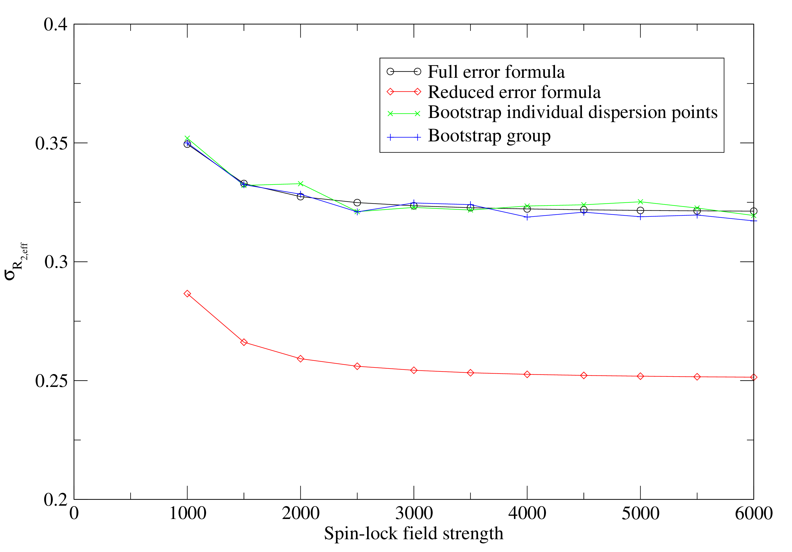

Next: The model for no Up: The base dispersion models Previous: The base dispersion models Contents Index
This is the simplest of all models in that the dispersion component of the base data - the peak intensity values - is not modelled. It is used to determine either the R2eff or R1ρ values and errors as required for the base data for all other models. It can be selected by setting the model to `R2eff'. Depending on the experiment type, this model will be handled differently. The R2eff/ R1ρ values determined can be later copied to the data pipes of the other dispersion models using the appropriate user functions.
For the fixed relaxation time period CPMG-type experiments, the R2eff/ R1ρ values are determined by direct calculation using the formula
The values and errors are determined with a single call of the minimise.calculate user function. The R1ρ version of the equation is essentially the same:
R1ρ(ω1) = - ⋅ln  . . |
(11.3) |
Errors are calculated using the formula
The derivation of this is simple enough. Rearranging 11.2,
R2⋅Trelax = - ln  . . |
(11.5) |
Using the rule
ln  = ln(X) - ln(Y), = ln(X) - ln(Y), |
(11.6) |
where X and Y are normally distributed variables, then
| R2⋅Trelax = ln(I0) - ln(I1), | (11.7) |
and
| R2 = - ⋅ln(I0) - ln(I1), | (11.8) |
Using the estimate from https://en.wikipedia.org/wiki/Propagation_of_uncertainty that for
| f = a ln(A), | (11.9) |
the variance of f is
| σf2 = a*, | (11.10) |
then the R2 variance is
| σR22 = ⋅ + ⋅. | (11.11) |
Rearranging gives 11.4.
In a number of publications, the error formula from Ishima and Torchia (2005) has been used. This is the collapse of Equation 11.4 by setting σI0 to zero:
This is not implemented in relax as it can be shown by simple simulation that the formula is incorrect (see Figure 11.1). This formula significantly underestimates the real errors. The use of the same I0 value for all dispersion points does not cause a decrease in the R2eff error but rather a correlation in the errors.
|

|
For the variable relaxation time period type experiments, the R2eff/ R1ρ values are determined by fitting to the simple two parameter exponential as in a R1 or R2 analysis. Both R2eff/ R1ρ and the initial peak intensity I0 are optimised using the minimise user function for each exponential curve separately. Monte Carlo simulations are used to obtain the parameter errors.
More information about the R2eff model is available from:
 .
.